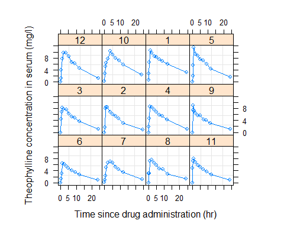

Chapter 14 NONMEM의 $COVARIANCE
배균섭
NONMEM의 실행과정은 대체로 initialization step, estimation step(추정단계), covariance step(공분산단계), table step(표단계)으로 나눌 수 있다. 공분산단계의 목적은 추정단계에서 추정된 파라미터(θ, Ω, Σ)들의 점 추정치(point estimate)에 대한 standard error(표준오차)를 구하는 것이다. 따라서, $COV 절을 제어파일에 포함시키지 않으면 표준오차 결과를 볼 수 없다. 공분산단계는 원칙적으로 추정단계가 성공했을 때만 의미가 있으므로 성공한 후에 실행되는데, 만약 추정 실패 시에도 종료시점에서의 값을 알고 싶으면 $COV에 UNCOND 옵션을 추가해주면 된다. 공분산단계가 추정단계와 별도로 분리된 이유는 NONMEM이 사용자가 준 original scale에서 목적함수를 최소화하는 것이 아니라, unconstrained parameter (UCP)를 사용하기 때문이다. UCP는 과거에 scaled and transformed parameter (STP)라고도 불리었다.
14.1 실제 사례
다음은 공분산단계의 결과물을 이해하기 위한 예제 제어파일의 내용이다. Theophylline 데이터셋은 12명의 사람에게 320mg의 theophylline을 1회 경구 투여한 자료이며 NONMEM설치시에 THEO 라는 파일 이름으로 포함되어 있다. 그림은 14.5를 참고한다.
$PROB THEOPHYLLINE ORAL
$INPUT ID AMT=DROP TIME DV BWT
$DATA ../THEO
$PRED
DOSE = 320
KA = THETA(1) * EXP(ETA(1))
V = THETA(2) * EXP(ETA(2))
K = THETA(3) * EXP(ETA(3))
F = DOSE/V*KA/(KA - K)*(EXP(-K*TIME) - EXP(-KA*TIME))
IPRE = F
Y = F + F*EPS(1) + EPS(2)
$THETA (0, 2) (0, 50) (0, 0.1)
$OMEGA BLOCK(3)
0.2
0.1 0.2
0.1 0.1 0.2
$SIGMA 0.1 0.1
$EST MAX=9999 METHOD=ZERO POSTHOC
$COV PRINT=ERS
$TAB ID TIME IPRE CWRES
FILE=sdtab NOPRINT ONEHEADER
$TAB ID ETA(1) ETA(2) ETA(3)
FILE=IndiEta.txt NOAPPEND ONEHEADER FIRSTONLY위의 $COV STEP에 의해 생성된 부분은 다음과 같다. 아래 그림의 원래 output은 126열까지까지 있으나, 지면의 제약으로 인해 104열이후는 생략하였다.
*******************************************************************************************************
******************** ***
******************** FIRST ORDER ***
******************** STANDARD ERROR OF ESTIMATE ***
******************** ***
*******************************************************************************************************
THETA - VECTOR OF FIXED EFFECTS PARAMETERS *********
TH 1 TH 2 TH 3
6.41E-01 1.68E+00 2.31E-02
OMEGA - COV MATRIX FOR RANDOM EFFECTS - ETAS ********
ETA1 ETA2 ETA3
ETA1 4.21E-01
ETA2 8.22E-02 1.98E-02
ETA3 3.40E-01 2.30E-02 2.89E-01
SIGMA - COV MATRIX FOR RANDOM EFFECTS - EPSILONS ****
EPS1 EPS2
EPS1 3.58E-03
EPS2 ......... 3.21E-02
OMEGA - CORR MATRIX FOR RANDOM EFFECTS - ETAS *******
ETA1 ETA2 ETA3
ETA1 1.92E-01
ETA2 1.78E-01 5.59E-02
ETA3 2.10E-01 1.99E-01 2.89E-01
SIGMA - CORR MATRIX FOR RANDOM EFFECTS - EPSILONS ***
EPS1 EPS2
EPS1 1.63E-02
EPS2 ......... 6.88E-02
*******************************************************************************************************
******************** ***
******************** FIRST ORDER ***
******************** COVARIANCE MATRIX OF ESTIMATE ***
******************** ***
*******************************************************************************************************
TH 1 TH 2 TH 3 OM11 OM12 OM13 OM22 OM23 OM33 SG
TH 1 4.11E-01
TH 2 3.39E-01 2.84E+00
TH 3 5.75E-03 5.04E-03 5.32E-04
OM11 2.06E-01 3.37E-01 1.63E-03 1.77E-01
OM12 2.01E-03 3.48E-02 -1.04E-03 1.95E-02 6.75E-03
OM13 1.22E-01 1.49E-01 7.11E-03 5.75E-02 -1.01E-02 1.16E-01
OM22 -2.19E-03 1.28E-02 -2.50E-04 3.21E-03 1.50E-03 -2.83E-03 3.92E-04
OM23 1.00E-03 2.38E-02 6.31E-05 4.21E-03 8.56E-04 3.12E-03 2.32E-04 5.31E-04
OM33 6.70E-02 5.74E-02 6.22E-03 1.80E-02 -1.31E-02 9.40E-02 -3.27E-03 1.87E-03 8.38E-02
SG11 1.05E-03 1.81E-03 5.81E-05 5.14E-04 -7.52E-05 9.77E-04 -2.05E-05 2.79E-05 8.05E-04 1.28E
SG12 ......... ......... ......... ......... ......... ......... ......... ......... ......... ......
SG22 -4.97E-03 -9.95E-03 -4.79E-04 -1.01E-03 9.53E-04 -3.86E-03 1.81E-04 2.20E-04 -3.40E-03 -2.82E
*******************************************************************************************************
******************** ***
******************** FIRST ORDER ***
******************** CORRELATION MATRIX OF ESTIMATE ***
******************** ***
*******************************************************************************************************
TH 1 TH 2 TH 3 OM11 OM12 OM13 OM22 OM23 OM33 SG
TH 1 6.41E-01
TH 2 3.14E-01 1.68E+00
TH 3 3.89E-01 1.30E-01 2.31E-02
OM11 7.63E-01 4.76E-01 1.68E-01 4.21E-01
OM12 3.81E-02 2.52E-01 -5.49E-01 5.64E-01 8.22E-02
OM13 5.57E-01 2.60E-01 9.06E-01 4.02E-01 -3.61E-01 3.40E-01
OM22 -1.73E-01 3.83E-01 -5.48E-01 3.85E-01 9.24E-01 -4.19E-01 1.98E-02
OM23 6.79E-02 6.14E-01 1.19E-01 4.35E-01 4.52E-01 3.98E-01 5.09E-01 2.30E-02
OM33 3.61E-01 1.18E-01 9.32E-01 1.48E-01 -5.50E-01 9.54E-01 -5.70E-01 2.80E-01 2.89E-01
SG11 4.58E-01 3.00E-01 7.04E-01 3.42E-01 -2.56E-01 8.02E-01 -2.90E-01 3.38E-01 7.78E-01 3.58E
SG12 ......... ......... ......... ......... ......... ......... ......... ......... ......... ......
SG22 -2.42E-01 -1.84E-01 -6.47E-01 -7.52E-02 3.61E-01 -3.54E-01 2.84E-01 2.97E-01 -3.66E-01 -2.46E
*******************************************************************************************************
******************** ***
******************** FIRST ORDER ***
******************** INVERSE COVARIANCE MATRIX OF ESTIMATE ***
******************** ***
*******************************************************************************************************
TH 1 TH 2 TH 3 OM11 OM12 OM13 OM22 OM23 OM33 SG
TH 1 1.06E+02
TH 2 -6.86E+01 5.80E+01
TH 3 6.45E+03 -4.88E+03 5.90E+05
OM11 3.36E+02 -3.02E+02 2.70E+04 1.68E+03
OM12 -2.55E+03 2.18E+03 -1.89E+05 -1.17E+04 8.48E+04
OM13 -1.20E+03 9.40E+02 -9.03E+04 -5.09E+03 3.58E+04 1.67E+04
OM22 -3.88E+02 5.71E+02 -6.62E+04 -3.41E+03 1.37E+04 1.09E+04 7.22E+04
OM23 1.08E+04 -8.98E+03 7.96E+05 4.74E+04 -3.37E+05 -1.50E+05 -1.17E+05 1.42E+06
OM33 -4.97E+01 8.80E+01 -1.06E+04 -4.44E+02 3.32E+03 9.71E+02 2.83E+03 -1.41E+04 9.57E+02
SG11 1.17E+04 -1.01E+04 8.99E+05 5.33E+04 -3.79E+05 -1.67E+05 -1.39E+05 1.59E+06 -2.01E+04 2.03E
SG12 ......... ......... ......... ......... ......... ......... ......... ......... ......... ......
SG22 -1.04E+03 1.00E+03 -4.72E+04 -4.88E+03 3.51E+04 1.43E+04 1.57E+04 -1.52E+05 9.39E+02 -1.70E
*******************************************************************************************************
******************** ***
******************** FIRST ORDER ***
******************** EIGENVALUES OF COR MATRIX OF ESTIMATE ***
******************** ***
*******************************************************************************************************
1 2 3 4 5 6 7 8 9 10
2.52E-04 9.67E-03 1.08E-02 2.33E-02 5.21E-02 2.98E-01 5.05E-01 9.11E-01 1.21E+00 3.21E
*******************************************************************************************************
******************** ***
******************** FIRST ORDER ***
******************** R MATRIX ***
******************** ***
*******************************************************************************************************
TH 1 TH 2 TH 3 OM11 OM12 OM13 OM22 OM23 OM33 SG
TH 1 1.79E+01
TH 2 -1.33E+00 5.51E-01
TH 3 -1.63E+02 -7.67E+00 3.43E+04
OM11 -4.13E+00 1.12E-01 8.60E+01 2.86E+01
OM12 2.16E+01 -1.46E+00 4.34E+02 -1.77E+02 1.93E+03
OM13 -1.10E+01 2.99E+00 -9.08E+01 -5.29E+01 2.11E+02 2.13E+02
OM22 1.02E+01 -1.65E+01 1.35E+01 2.73E+02 -4.27E+03 -1.40E+02 1.66E+04
OM23 5.23E+01 -1.83E+01 9.57E+02 1.64E+02 -1.42E+03 -5.56E+02 1.11E+03 4.05E+03
OM33 7.05E+00 -2.23E+00 -1.35E+03 2.45E+01 -4.37E+01 -1.51E+02 1.87E+01 1.31E+02 2.37E+02
SG11 2.49E+02 -1.21E+02 -7.03E+03 5.03E+01 -1.01E+03 9.63E+01 4.68E+03 -5.57E+02 -2.03E+01 1.93E
SG12 ......... ......... ......... ......... ......... ......... ......... ......... ......... ......
SG22 -1.75E+00 -5.21E+00 -1.99E+03 6.01E+00 1.24E+02 -6.30E+01 -4.59E+01 -2.01E+02 9.27E+01 6.57E
*******************************************************************************************************
******************** ***
******************** FIRST ORDER ***
******************** S MATRIX ***
******************** ***
*******************************************************************************************************
TH 1 TH 2 TH 3 OM11 OM12 OM13 OM22 OM23 OM33 SG
TH 1 7.83E+01
TH 2 -4.65E+00 7.65E-01
TH 3 -1.30E+03 6.44E+01 1.84E+05
OM11 -1.19E+01 2.62E+00 -2.31E+02 1.84E+01
OM12 1.43E+02 -2.86E+01 8.40E+02 -1.72E+02 2.01E+03
OM13 -2.67E+01 2.39E-01 3.80E+03 -1.97E+01 5.17E+01 1.29E+02
OM22 -1.46E+02 2.95E+01 9.00E+03 2.92E+02 -3.81E+03 1.89E+02 1.20E+04
OM23 4.44E+01 1.08E+01 -1.08E+04 8.49E+01 -7.65E+02 -2.93E+02 6.68E+02 1.12E+03
OM33 1.40E+01 -4.41E+00 -6.40E+03 3.47E+00 8.80E+01 -1.56E+02 -7.13E+02 2.95E+02 3.28E+02
SG11 2.04E+03 -3.98E+02 -4.14E+03 -1.17E+03 8.92E+03 1.80E+03 -3.83E+03 -1.06E+04 1.81E+03 4.20E
SG12 ......... ......... ......... ......... ......... ......... ......... ......... ......... ......
SG22 2.80E+02 -4.73E+01 -6.05E+04 -2.27E+01 6.71E+02 -1.11E+03 -3.49E+03 2.78E+03 2.36E+03 1.81E$COV에 의해 생성되는 첫 번째 부분(section)은 추정치의 표준오차 부분으로 출력의 직전 section인 FINAL PARAMETER ESTIMATE과 배치 모양이 똑같다. 이후의 출력들은 대개 이를 구하기 위해 필요한 중간계산결과들이다.
$COV output의 두 번째 부분은 추정값(estimate)의 분산-공분산행렬(variance-covariance matrix)이다. 이 행렬의 대각원소에다 제곱근을 취한 것이 추정값의 표준오차이다. 이는 뒤에 나오는 R matrix와 S matrix를 사용하여 \(R^{- 1}SR^{- 1}\)를 계산한 것이다.
$COV 출력의 세 번째 부분은 직전 부분인 분산-공분산행렬을 상관행렬(correlation matrix)로 변환한 것이다. 다만, 대각원소는 제곱근을 취하여 standard deviation(여기서는 standard error가 됨)을 표시하고 있다.
$COV 출력의 네 번째 부분은 분산-공분산행렬의 역행렬이다. 내부적으로는 이 행렬을 먼저 구한 뒤, 이것의 역행렬을 분산-공분산행렬로 삼는다. 이것의 의미는 Fisher’s Information Matrix (NONMEM에서의 R matrix)와 유사하지만, 계산법은 더 보수적이어서 다르다.
$COV output의 다섯 번째 부분은 상관행렬로부터 구한 고유치(eigenvalue)들을 작은 것부터 순서대로 나열한 것이다. 만약 상관행렬이 positive definite(양정치)라면 이것은 모두 양의 실수로 나와야 한다. 여기에 대한 추가 설명은 14.5를 참고한다.
$COV output의 여섯 번째 부분은 R matrix이다. 이는 log likelihood를 parameter들로 이계미분한 것(hessian matrix)으로 Fisher’s Information Matrix(FIM)이라고도 한다. 일반적인 최대가능도추정법(maximum likelihood estimation, MLE)에서는 이것의 역행렬을 분산-공분산 행렬로 삼지만 NONMEM에서는 다음에 나오는 S matrix와 함께 sandwich estimator를 사용한다.
$COV output의 마지막 부분은 S matrix이다. 이는 개별 대상자의 log likelihood를 파라미터들로 일계미분값(gradient vector)에 대한 cross product(n by 1 열벡터를 그것의 transpose(1 by n vector)와 곱한 것으로 n by n matrix가 된다)들을 모두 합한 것이다. MLE 이론에 따르면 이상적인 상황에서 S matrix와 R matrix의 기대값은 같다. 하지만, 실제로는 상당히 다를 수 있고, 정규분포 가정도 어긋날 수 있으므로 NONMEM은 \(R^{- 1}SR^{- 1}\) 를 분산-공분산행렬로 삼는다.
만약 어떤 원인(예를 들어, R이 singular)에 의해 분산-공분산행렬을 구할 수 없고, 따라서, 표준오차를 구할 수 없다면 $COV에서 MATRIX=R 또는 MATRIX=S 옵션으로 단순화하여 표준오차를 구할 수 있다. 이 경우에는 대개 표준오차 가 더 작게 나온다. 어떤 행렬이 singular(비정칙)이어서 역행렬을 구할 수 없다면 NONMEM은 pseudo-inverse matrix를 구하게 되는데, 이는 유일한(unique) 해는 아니므로 해석에 유의해야 한다.
$COV step이 실패하는 경우에는 먼저 파라미터 추정값에 이상이 없는지 살펴보고, 이상이 없어 보이면 붓스트랩이나 profile-likelihood등의 다른 방법을 이용하여 신뢰구간을 구하면 된다. 이 때 신뢰구간이 비대칭일 가능성이 크므로 표준오차는 제시하기 어려워진다. 혹자는 $COV에 의한 표준오차 보다 붓스트랩에 의한 신뢰구간이 (시간은 훨씬 많이 걸리지만) 더 좋다고 한다. 붓스트랩을 할 때는 $COV 절을 삭제하는 것이 시간을 절약하는 방법이다.
14.2 NONMEM document
NONMEM User’s guide와 help file에는 $COV를 다음과 같이 설명한다.
$COVARIANCE
DISCUSSION:
Optional. Requests that the NONMEM Covariance Step be implemented.
This step outputs: standard errors, covariance matrix, inverse covari-
ance matrix, and the correlation form of the covariance matrix.
OPTIONS:
MATRIX=c
Specifies that the covariance matrix will be different from the
default (R sup -1 S R sup -1). MATRIX=R requests that 2 times
the inverse R matrix be used. MATRIX=S requests that 4 times the
inverse S matrix be used. (R and S are two matrices from sta-
tistical theory, the Hessian and Cross-Product Gradient matri-
ces, respectively.) With MATRIX=R the standard errors will be |
more consistent with other nonlinear regression software imple- |
mentations.
PRINT=[E][R][S]
Additional outputs will be printed besides the defaults. E:
print the eigenvalues of the correlation matrix. R: print the
matrix .5*R. S: print the matrix .25*S.
REFERENCES: Guide IV, section III.B.15
REFERENCES: Guide V, section 9.4.2 , 10.614.3 14.3이론적 배경 - MLE
NONMEM의 수행은 대체로 초기화단계, 추정단계, 공분산단계, 표단계로 나눌 수 있다. 이중 공분산단계에 대하여 설명하고자 한다. 추정단계가 끝나면 최종 파라미터 추정값이 구해진다. NONMEM에서는 Y의 분포가 정규이든 아니든 상관없이 정규분포의 가능도 함수(엄밀히는 이것을 약간 변형한 것)를 목적함수로 한다. 즉, maximum likelihood estimation (MLE) 방법을 사용한다.
MLE에서는 loglikelihood가 목적함수인 경우에 Fisher’s Information Matrix의 역행렬을 이용하여 추정값들의 분산-공분산 행렬과 표준오차를 구할 수 있다. 표준오차는 분산-공분산 행렬의 대각원소를 1/2승 한 것이다.
MLE 이론에 따르면 log likelihood (l)를 파라미터 추정값에서의 1계 편미분한 것의 제곱과 2계 편미분한 것이 부호만 반대인 같은 기대값을 가진다.
\[\int f(x;\theta)dx = 1\]
\[\int exp(lnf(x;\theta))dx = 1\]
양변을 \(\theta\)에 대해 미분하면
\[\int\left\{ \frac{\partial}{\partial\theta}lnf(x;\theta) \right\} exp(lnf(x;\theta))dx = 0\]
\[E_{\theta}\left\lbrack \frac{\partial}{\partial\theta}lnf(X;\theta) \right\rbrack = 0\]
한 번 더 미분하면
\[\int\left\{ \frac{\partial^{2}}{\partial\theta^{2}}lnf(x;\theta) + \left\lbrack \frac{\partial}{\partial\theta}lnf(x;\theta) \right\rbrack^{2} \right\} exp(lnf(x;\theta))dx = 0\]
\[E_{\theta}\left\{ \frac{\partial^{2}}{\partial\theta^{2}}lnf(X;\theta) + \left\lbrack \frac{\partial}{\partial\theta}lnf(X;\theta) \right\rbrack^{2} \right\} = 0\]
\[I(\theta) = E_{\theta}\left\{ \frac{\partial^{2}}{\partial\theta^{2}}lnf(X;\theta) \right\} = E_{\theta}\left\{ - \left\lbrack \frac{\partial}{\partial\theta}lnf(X;\theta) \right\rbrack^{2} \right\} = Var_{\theta}\left\{ \frac{\partial}{\partial\theta}lnf(X;\theta) \right\}\]
좀 더 복잡한 과정을 거치면 \(\sqrt{n}({\widehat{\theta}}^{\text{MLE}} - \theta)\)는 점근적으로 \(N(0,\lbrack I(\theta)\rbrack^{- 1})\) 를 따름을 증명할 수 있다. (김우철 2012)
아주 이상적이지만(그러나 극히 드문) 상황에서는 목적함수의 1계 미분의 제곱과 2계 미분이 같겠지만, 실제 관찰값으로 계산하면 다르다. NONMEM에서는 1계 미분의 제곱행렬을 S matrix, 2계 미분 행렬(Hessian)을 R matrix라고 부른다. 대부분의 MLE software에서는 R matrix의 inverse만으로 estimate의 분산-공분산 행렬로 삼고 표준오차를 산출한다. NONMEM에서는 \(R^{- 1}SR^{- 1}\)을 estimate의 분산-공분산 행렬로 삼는다. 이것은 더 보수적인 방법이어서 신뢰구간이 더 넓게 나온다.
수식으로 표현하자면 다음과 같다. 여기에서 \(O_{i}\)는 개인(i)의 목적함수 값이며, \(O\)는 전체 목적함수 값이다.
\[O = \sum_{i}^{}O_{i}\]
\[S = \sum_{i}^{}{\nabla_{O_{i}}{\nabla_{O_{i}}}^{T}} = \sum_{i}^{}\frac{\partial O_{i}}{\partial\theta}\frac{\partial O_{i}}{\partial\theta}^{T}\]
\[R = \frac{\partial^{2}O}{\partial\theta^{2}}\]
14.4 14.4 R에서의 구현
14.1의 예제를 R로 풀이하면 다음과 같다. 우선 nmw package를 설치한다.
if (!require(nmw)) install.packages("nmw")다음 함수를 보면 covariance step의 전반적인 개요를 알 수 있다.
CovStep
## function ()
## {
## e$STEP = "COV"
## StartTime = Sys.time()
## Rmat = hessian(Obj, e$FinalPara)/2
## Smat = CalcSmat()
## if (is.nan(Smat[1, 1]))
## stop("Error - NaN produced")
## invR = solve(Rmat)
## Cov = invR %*% Smat %*% invR
## SE = sqrt(diag(Cov))
## Correl = cov2cor(Cov)
## InvCov = Rmat %*% solve(Smat) %*% Rmat
## EigenVal = sort(eigen(Correl)$values)
## RunTime = difftime(Sys.time(), StartTime)
## Result = list(RunTime, SE, Cov, Correl, InvCov, EigenVal,
## Rmat, Smat)
## names(Result) = list("Time", "Standard Error", "Covariance Matrix of Estimates",
## "Correlation Matrix of Estimates", "Inverse Covariance Matrix of Estimates",
## "Eigen Values", "R Matrix", "S Matrix")
## return(Result)
## }
## <bytecode: 0x0000000015ebb088>
## <environment: namespace:nmw>S matrix를 계산하는 함수는 다음과 같다.
CalcSmat
## function ()
## {
## Smat = matrix(rep(0, e$nPara * e$nPara), nrow = e$nPara,
## ncol = e$nPara)
## for (i in 1:e$nID) {
## e$DATAi = e$DataRef[[i]]
## e$ETAi = e$EBE[i, e$EtaNames]
## e$nReci = e$Oi[i, "nRec"]
## if (e$METHOD == "ZERO") {
## gr = grad(OiS0, e$FinalPara)
## }
## else {
## gr = grad(OiS1, e$FinalPara)
## }
## Smat = Smat + gr %*% t(gr)
## }
## return(Smat/4)
## }
## <bytecode: 0x000000001793eec0>
## <environment: namespace:nmw>14.5 14.5 Theophylline 예제 데이터셋
R에는 기본적으로 nlme 팩키지가 설치되어 있으며, NONMEM에도 있는 theophylline 데이터가 포함되어 있다.
Theophylline데이터를 그리면 다음과 같다.
require(nlme)
plot(Theoph)
위의 자료를 다음과 같이 경구 1 구획모델에 적합시켜 보기로 한다.
\[K_{a} = \theta_{1}e^{\eta_{1}}\]
\[V = \theta_{2}e^{\eta_{2}}\]
\[K = \theta_{3}e^{\eta_{3}}\]
\[C(t) = \frac{\text{DOSE}}{V}\frac{K_{a}}{K_{a} - K}(e^{- Kt} - e^{- K_{a}t})\]
NONMEM 제어파일의 내용은 14.1에서 표시한 것과 같다.
R에서는 다음과 같은 준비 작업이 필요하다.
DataAll = Theoph
colnames(DataAll) = c("ID", "BWT", "DOSE", "TIME", "DV")
DataAll[,"ID"] = as.numeric(as.character(DataAll[,"ID"]))
nTheta = 3
nEta = 3
nEps = 2
THETAinit = c(2, 50, 0.1)
OMinit = matrix(c(0.2, 0.1, 0.1, 0.1, 0.2, 0.1, 0.1, 0.1, 0.2),
nrow=nEta, ncol=nEta)
SGinit = diag(c(0.1, 0.1))
LB = rep(0, nTheta) # Lower bound
UB = rep(1000000, nTheta) # Upper bound
FGD1 = deriv(~DOSE/(TH2*exp(ETA2))*TH1*exp(ETA1)/(TH1*exp(ETA1) - TH3*exp(ETA3))*
(exp(-TH3*exp(ETA3)*TIME)-exp(-TH1*exp(ETA1)*TIME)),
c("ETA1","ETA2","ETA3"),
function.arg=c("TH1", "TH2", "TH3", "ETA1", "ETA2", "ETA3", "DOSE",
"TIME"),
func=TRUE, hessian=FALSE)
H = deriv(~F + F*EPS1 + EPS2, c("EPS1", "EPS2"),
function.arg=c("F", "EPS1", "EPS2"),
func=TRUE)
PRED1 = function(THETA, ETA, DATAi) # for FO and FOCE
{
FGDres = FGD1(THETA[1], THETA[2], THETA[3], ETA[1], ETA[2], ETA[3], DOSE=320,
DATAi[,"TIME"])
Gres = attr(FGDres, "gradient")
Hres = attr(H(FGDres, 0, 0), "gradient")
Res = cbind(FGDres, Gres, Hres)
colnames(Res) = c("F", "G1", "G2", "G3", "H1", "H2")
return(Res)
}위 PRED 함수의 return 값 중에 F는 model prediction value이고, G들은 model predictiion function(structural model)을 각 η에 대하여 편미분한 값들이다. H들은 잔차에 대한 통계모형(model prediction에 noise가 섞여 관찰값을 이루는 모형)을 각 ε으로 편미분한 값들이다. F, G, H는 목적함수값을 구할 때 필요하다. NONMEM에서는 nmtran이 G와 H를 구하는 수식을 기호미분(symbolic differentiation)으로 구하나, R에서는 자동으로 해주는 것이 없으므로, 위와 같이 사용자가 직접 구성해 주어야 한다.
이후에 다음과 같은 R script를 실행하면 NONMEM output과 형태는 다르지만 내용은 동일한 결과를 얻을 수 있다.
# First Order Approximation Method
InitStep(DataAll, THETAinit=THETAinit, OMinit=OMinit, SGinit=SGinit, LB=LB, UB=UB,
Pred=PRED1, METHOD="ZERO")
(EstRes1 = EstStep())
## $`Initial OFV`
## [1] 141.3076
##
## $Time
## Time difference of 2.999814 secs
##
## $Optim
## $Optim$par
## [1] 0.560417594 -0.167835388 0.148962362 0.995143048 0.056166719
## [6] 0.151227211 -1.032468525 0.005776729 0.110936464 -0.956899772
## [11] -0.205559310
##
## $Optim$value
## [1] 57.32106
##
## $Optim$counts
## function gradient
## 74 74
##
## $Optim$convergence
## [1] 0
##
## $Optim$message
## [1] "CONVERGENCE: REL_REDUCTION_OF_F <= FACTR*EPSMCH"
##
##
## $`Final Estimates`
## [1] 3.16946754 38.25213460 0.10501808 1.19823325 0.13747849
## [6] 0.03134899 0.37015671 0.04340042 0.25068582 0.01207782
## [11] 0.05427434
(CovRes1 = CovStep())
## $Time
## Time difference of 1.0468 secs
##
## $`Standard Error`
## [1] 0.641076544 1.685217844 0.023072024 0.420617306 0.082197497
## [6] 0.019812976 0.340273208 0.023052142 0.289524327 0.003576926
## [11] 0.032078283
##
## $`Covariance Matrix of Estimates`
## [,1] [,2] [,3] [,4] [,5]
## [1,] 0.4109791347 0.339158144 5.746694e-03 0.2058089645 2.003772e-03
## [2,] 0.3391581437 2.839959182 5.032613e-03 0.3376028346 3.490465e-02
## [3,] 0.0057466939 0.005032613 5.323183e-04 0.0016294512 -1.041991e-03
## [4,] 0.2058089645 0.337602835 1.629451e-03 0.1769189182 1.951490e-02
## [5,] 0.0020037724 0.034904655 -1.041991e-03 0.0195149026 6.756428e-03
## [6,] -0.0021925236 0.012804811 -2.503963e-04 0.0032072246 1.504690e-03
## [7,] 0.1215890847 0.149089319 7.111900e-03 0.0575731487 -1.010198e-02
## [8,] 0.0009971098 0.023865634 6.271266e-05 0.0042158445 8.584714e-04
## [9,] 0.0669924083 0.057326151 6.226096e-03 0.0179862543 -1.309239e-02
## [10,] 0.0010500117 0.001807746 5.805488e-05 0.0005143569 -7.516774e-05
## [11,] -0.0049728997 -0.009950377 -4.790610e-04 -0.0010145003 9.532948e-04
## [,6] [,7] [,8] [,9] [,10]
## [1,] -2.192524e-03 0.1215890847 9.971098e-04 0.0669924083 1.050012e-03
## [2,] 1.280481e-02 0.1490893190 2.386563e-02 0.0573261514 1.807746e-03
## [3,] -2.503963e-04 0.0071119003 6.271266e-05 0.0062260963 5.805488e-05
## [4,] 3.207225e-03 0.0575731487 4.215844e-03 0.0179862543 5.143569e-04
## [5,] 1.504690e-03 -0.0101019780 8.584714e-04 -0.0130923877 -7.516774e-05
## [6,] 3.925540e-04 -0.0028272756 2.326326e-04 -0.0032697941 -2.051327e-05
## [7,] -2.827276e-03 0.1157858558 3.116262e-03 0.0940102394 9.767199e-04
## [8,] 2.326326e-04 0.0031162617 5.314013e-04 0.0018656807 2.786064e-05
## [9,] -3.269794e-03 0.0940102394 1.865681e-03 0.0838243357 8.055388e-04
## [10,] -2.051327e-05 0.0009767199 2.786064e-05 0.0008055388 1.279440e-05
## [11,] 1.806783e-04 -0.0038608273 2.199601e-04 -0.0033970159 -2.824858e-05
## [,11]
## [1,] -4.972900e-03
## [2,] -9.950377e-03
## [3,] -4.790610e-04
## [4,] -1.014500e-03
## [5,] 9.532948e-04
## [6,] 1.806783e-04
## [7,] -3.860827e-03
## [8,] 2.199601e-04
## [9,] -3.397016e-03
## [10,] -2.824858e-05
## [11,] 1.029016e-03
##
## $`Correlation Matrix of Estimates`
## [,1] [,2] [,3] [,4] [,5] [,6]
## [1,] 1.00000000 0.3139325 0.3885281 0.76325079 0.03802594 -0.1726174
## [2,] 0.31393253 1.0000000 0.1294350 0.47628061 0.25198153 0.3835018
## [3,] 0.38852814 0.1294350 1.0000000 0.16790689 -0.54943908 -0.5477629
## [4,] 0.76325079 0.4762806 0.1679069 1.00000000 0.56444374 0.3848509
## [5,] 0.03802594 0.2519815 -0.5494391 0.56444374 1.00000000 0.9239295
## [6,] -0.17261745 0.3835018 -0.5477629 0.38485092 0.92392947 1.0000000
## [7,] 0.55738714 0.2599936 0.9058832 0.40225837 -0.36117699 -0.4193635
## [8,] 0.06747173 0.6143355 0.1179121 0.43479661 0.45306025 0.5093422
## [9,] 0.36093637 0.1174929 0.9320626 0.14769593 -0.55014251 -0.5700142
## [10,] 0.45790382 0.2998965 0.7034659 0.34187510 -0.25566008 -0.2894510
## [11,] -0.24181804 -0.1840655 -0.6472826 -0.07518893 0.36154098 0.2842792
## [,7] [,8] [,9] [,10] [,11]
## [1,] 0.5573871 0.06747173 0.3609364 0.4579038 -0.24181804
## [2,] 0.2599936 0.61433553 0.1174929 0.2998965 -0.18406548
## [3,] 0.9058832 0.11791205 0.9320626 0.7034659 -0.64728263
## [4,] 0.4022584 0.43479661 0.1476959 0.3418751 -0.07518893
## [5,] -0.3611770 0.45306025 -0.5501425 -0.2556601 0.36154098
## [6,] -0.4193635 0.50934216 -0.5700142 -0.2894510 0.28427925
## [7,] 1.0000000 0.39727833 0.9542504 0.8024764 -0.35370524
## [8,] 0.3972783 1.00000000 0.2795381 0.3378856 0.29745513
## [9,] 0.9542504 0.27953807 1.0000000 0.7778421 -0.36576437
## [10,] 0.8024764 0.33788563 0.7778421 1.0000000 -0.24619292
## [11,] -0.3537052 0.29745513 -0.3657644 -0.2461929 1.00000000
##
## $`Inverse Covariance Matrix of Estimates`
## [,1] [,2] [,3] [,4] [,5]
## [1,] 106.16085 -68.57396 6449.005 335.8698 -2554.409
## [2,] -68.57396 58.03937 -4878.746 -302.1420 2175.297
## [3,] 6449.00514 -4878.74594 589180.809 26966.6055 -188642.065
## [4,] 335.86981 -302.14199 26966.605 1681.5577 -11681.346
## [5,] -2554.40932 2175.29716 -188642.065 -11681.3456 84767.297
## [6,] -386.87894 570.22260 -66147.099 -3404.8900 13635.511
## [7,] -1202.16352 939.99684 -90186.464 -5086.8917 35747.140
## [8,] 10794.57609 -8973.04621 795473.397 47387.2333 -336778.082
## [9,] -49.38187 87.68163 -10522.263 -442.6127 3308.451
## [10,] 11656.77324 -10122.84537 899033.055 53311.6422 -378718.161
## [11,] -1043.11500 1001.74635 -47225.438 -4879.5431 35063.038
## [,6] [,7] [,8] [,9] [,10]
## [1,] -386.8789 -1202.1635 10794.576 -49.38187 11656.77
## [2,] 570.2226 939.9968 -8973.046 87.68163 -10122.85
## [3,] -66147.0986 -90186.4639 795473.397 -10522.26321 899033.06
## [4,] -3404.8900 -5086.8917 47387.233 -442.61268 53311.64
## [5,] 13635.5106 35747.1396 -336778.082 3308.45066 -378718.16
## [6,] 72186.1449 10923.7488 -116902.668 2827.92008 -138707.39
## [7,] 10923.7488 16640.0641 -149635.854 965.72182 -166637.08
## [8,] -116902.6684 -149635.8536 1416416.077 -14025.69870 1587796.18
## [9,] 2827.9201 965.7218 -14025.699 954.65511 -20047.21
## [10,] -138707.3931 -166637.0784 1587796.183 -20047.20949 2031529.82
## [11,] 15687.7641 14275.7793 -151936.736 935.29881 -170271.34
## [,11]
## [1,] -1043.1150
## [2,] 1001.7464
## [3,] -47225.4381
## [4,] -4879.5431
## [5,] 35063.0376
## [6,] 15687.7641
## [7,] 14275.7793
## [8,] -151936.7362
## [9,] 935.2988
## [10,] -170271.3406
## [11,] 28036.5550
##
## $`Eigen Values`
## [1] 0.0002519304 0.0096729015 0.0108358602 0.0233184643 0.0520725533
## [6] 0.2982375053 0.5047779131 0.9114702297 1.2088053283 3.2082379737
## [11] 4.7723193401
##
## $`R Matrix`
## [,1] [,2] [,3] [,4] [,5]
## [1,] 17.924787 -1.3343223 -162.767654 -4.1309683 21.546405
## [2,] -1.334322 0.5507357 -7.672315 0.1118322 -1.462878
## [3,] -162.767654 -7.6723148 34333.363150 86.0269293 433.962384
## [4,] -4.130968 0.1118322 86.026929 28.6263094 -177.270130
## [5,] 21.546405 -1.4628778 433.962384 -177.2701302 1930.445843
## [6,] 10.225928 -16.5210396 13.387686 272.9370786 -4270.878832
## [7,] -11.022690 2.9849069 -90.741373 -52.9261900 210.709300
## [8,] 52.304346 -18.2457139 956.482064 164.3158075 -1421.957500
## [9,] 7.044855 -2.2338946 -1350.939646 24.4536958 -43.763546
## [10,] 248.456482 -120.7991176 -7033.212482 50.2328789 -1013.856688
## [11,] -1.752135 -5.2052276 -1992.414213 6.0120604 124.417556
## [,6] [,7] [,8] [,9] [,10]
## [1,] 10.22593 -11.022690 52.30435 7.044855 248.45648
## [2,] -16.52104 2.984907 -18.24571 -2.233895 -120.79912
## [3,] 13.38769 -90.741373 956.48206 -1350.939646 -7033.21248
## [4,] 272.93708 -52.926190 164.31581 24.453696 50.23288
## [5,] -4270.87883 210.709300 -1421.95750 -43.763546 -1013.85669
## [6,] 16610.43942 -139.814385 1113.59904 18.726078 4680.59998
## [7,] -139.81438 213.228947 -555.99366 -151.083275 96.25915
## [8,] 1113.59904 -555.993663 4043.51428 130.794770 -555.76917
## [9,] 18.72608 -151.083275 130.79477 236.875935 -20.42601
## [10,] 4680.59998 96.259149 -555.76917 -20.426010 192857.05263
## [11,] -46.02961 -62.941133 -201.26760 92.656857 6568.90926
## [,11]
## [1,] -1.752135
## [2,] -5.205228
## [3,] -1992.414213
## [4,] 6.012060
## [5,] 124.417556
## [6,] -46.029614
## [7,] -62.941133
## [8,] -201.267605
## [9,] 92.656857
## [10,] 6568.909257
## [11,] 3974.804398
##
## $`S Matrix`
## [,1] [,2] [,3] [,4] [,5]
## [1,] 78.316509 -4.6468525 -1295.13192 -11.873085 142.72165
## [2,] -4.646852 0.7648878 64.36589 2.623533 -28.61925
## [3,] -1295.131915 64.3658917 183632.39790 -230.636173 840.38211
## [4,] -11.873085 2.6235332 -230.63617 18.368716 -171.71679
## [5,] 142.721653 -28.6192545 840.38211 -171.716794 2005.81552
## [6,] -145.835176 29.4905947 9000.10289 291.779615 -3809.95407
## [7,] -26.707401 0.2387057 3794.27704 -19.686952 51.76139
## [8,] 44.375129 10.7614124 -10813.66435 84.841787 -765.19107
## [9,] 13.946014 -4.4042212 -6396.75146 3.480210 87.90129
## [10,] 2039.647982 -397.4745827 -4148.02643 -1170.279733 8916.77585
## [11,] 279.500822 -47.3111189 -60483.51062 -22.729230 670.78875
## [,6] [,7] [,8] [,9] [,10]
## [1,] -145.83518 -26.7074010 44.37513 13.946014 2039.6480
## [2,] 29.49059 0.2387057 10.76141 -4.404221 -397.4746
## [3,] 9000.10289 3794.2770370 -10813.66435 -6396.751456 -4148.0264
## [4,] 291.77961 -19.6869516 84.84179 3.480210 -1170.2797
## [5,] -3809.95407 51.7613883 -765.19107 87.901295 8916.7758
## [6,] 12023.28652 188.5688359 667.62858 -711.894529 -3829.1367
## [7,] 188.56884 129.3349739 -292.66398 -155.764410 1796.9713
## [8,] 667.62858 -292.6639799 1121.03185 294.247258 -10631.8774
## [9,] -711.89453 -155.7644099 294.24726 327.282119 1812.2113
## [10,] -3829.13667 1796.9713202 -10631.87742 1812.211286 419517.6543
## [11,] -3489.01512 -1105.9231026 2773.71160 2358.454995 18067.4267
## [,11]
## [1,] 279.50082
## [2,] -47.31112
## [3,] -60483.51062
## [4,] -22.72923
## [5,] 670.78875
## [6,] -3489.01512
## [7,] -1105.92310
## [8,] 2773.71160
## [9,] 2358.45500
## [10,] 18067.42672
## [11,] 24042.66052
(EBE1 = PostHocEta()) # Using e$FinalPara from EstStep()
## ID ETA1 ETA2 ETA3
## [1,] 1 -0.6367109 -0.232258352 -0.73648224
## [2,] 2 -0.5895843 -0.153341805 -0.06619115
## [3,] 3 -0.3083755 -0.124816676 -0.21013190
## [4,] 4 -1.0305984 -0.186821177 -0.21195510
## [5,] 5 -0.8235560 -0.302352128 -0.24453948
## [6,] 6 -1.0025271 0.068181532 -0.08745089
## [7,] 7 -1.4316285 -0.097903076 -0.13802639
## [8,] 8 -0.7541785 -0.039239022 -0.19621190
## [9,] 9 0.7875803 0.010757282 -0.19937965
## [10,] 10 -1.4555649 -0.369057237 -0.40057582
## [11,] 11 0.1541451 -0.005061315 -0.08005791
## [12,] 12 -1.2863346 -0.388864841 -0.10134440
# (Tab1 = TabStep())14.6 14.6고유값(Eigenvalue)
공분산단계 에서는 상관행렬(correlation matrix)의 고유값(eigenvalue)도 출력된다.
어떤 행렬 A를 스칼라 \(\lambda\)와 벡터u를 이용하여 다음과 같이 표시할 수 있을 때,
\[Au = \lambda u\]
\(\lambda\)를 A의 고유값이라 하고 그 고유값에 해당하는 벡터 u를 고유벡터(eigenvector)라고 한다.
\(\lambda\)는
\[\left| A - \lambda I \right| = 0\]
이라는 특성 방정식의 근들로 구할 수 있다.
Minimization에서 고유값을 출력하는 이유는 minimization 과정이 얼마나 어려웠는가를 표시하기 위해서이다. 조건수(condition number)란 고유값의 최대치/최소치에다 1/2승한 것인데, 이것이 크다면 그만큼 수치계산의 어려움을 겪었다는 것이다. 조건수가 크다고 모형이 잘못되었다는 것을 의미하는 것은 아니다. 혹시 minimization(fitting)에 실패하였다면 그 원인 중의 하나가 조건수가 크기 때문일 수 있다.
14.7 결론
NONMEM의 Covariance step을 이해하기 위해 R로 NONMEM의 output을 재현해 보았다. 그러나, R이 NONMEM을 대체할 수 없는 이유 두 가지는 다음과 같다.
- NMTRAN의 역할을 해줄 함수들이 없다.
- 속도가 적어도 수 십에서 수 백 배 느리다.
나머지 FOCE나 Laplacian에 대해서는 nmw 팩키지의 도움말을 보고 실행하면 알 수 있다.
참고문헌
- NONMEM User’s Guide I - VIII
- 김우철. 수리통계학. 민영사. 2012
참고문헌
김우철. 2012. 수리통계학. 민영사. https://books.google.co.kr/books?id=yBOWtwAACAAJ.